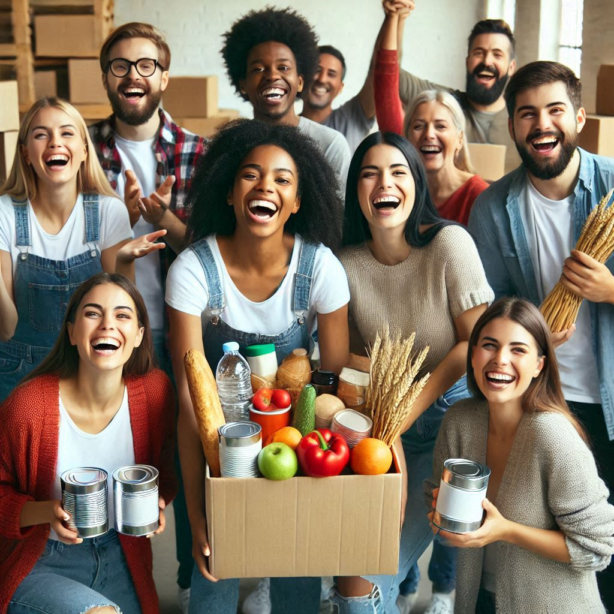
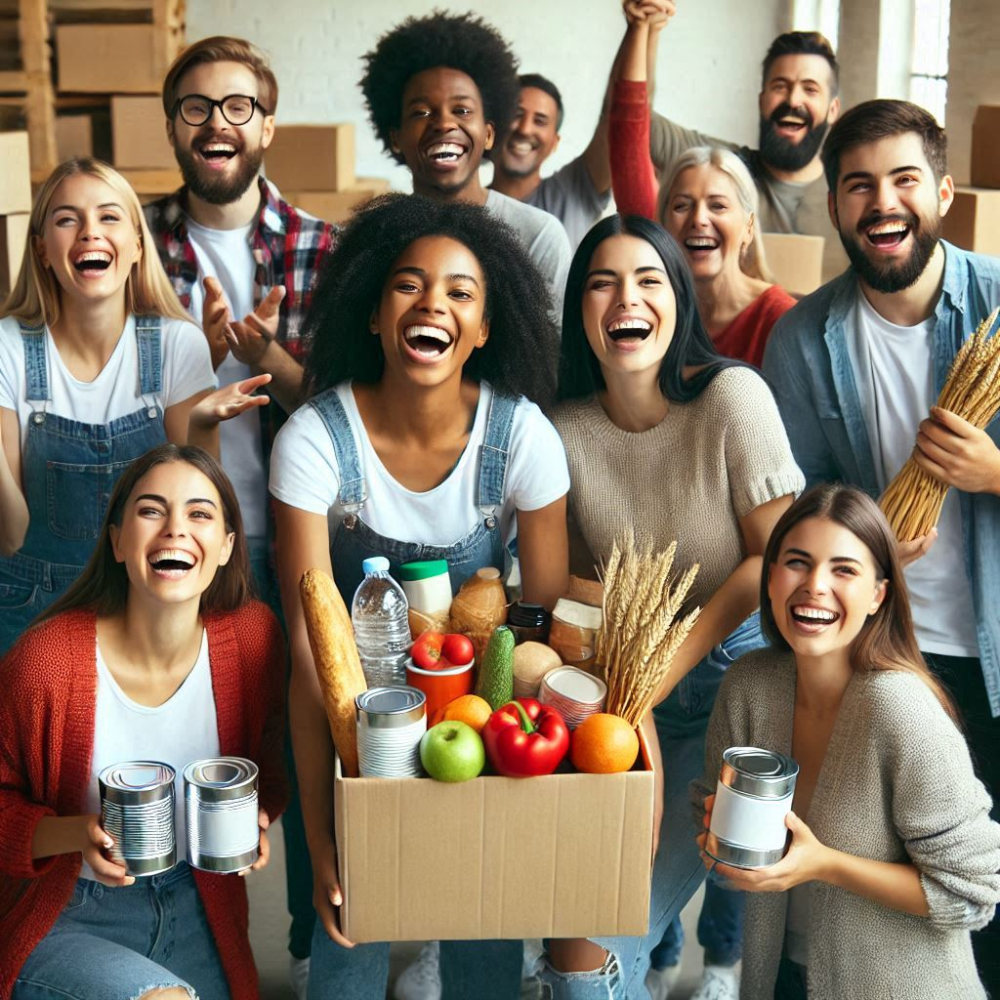

By joining our platform, you can help tackle two major issues: food waste and hunger. Our platform works by connecting people and organizations who have surplus food (donors) with individuals and groups who are in need of food (recipients). This makes it easy for anyone with extra food to donate it, helping prevent that food from going to waste. Donating food through our platform is not only a safe and simple process, but it also plays a vital role in addressing food insecurity. By contributing, you’re helping to provide nutritious meals for families, individuals, and communities who might otherwise go without. You are also supporting a more sustainable environment, as less food waste means fewer resources used in producing, transporting, and disposing of uneaten food. Together, we can work towards a future where no food is wasted and no one goes hungry, making a positive impact on both people and the planet.
Our platform connects people who have surplus food with those in need. Individuals, restaurants, cafes, grocery stores, event organizers, community groups, and farmers can all donate food, whether it’s leftover from an event, unsold at the end of the day, near-expiry items, or excess produce. Donors can expect an easy donation process, assurance that their food reaches the right people, and possible recognition or incentives like certificates. The recipients include individuals, families, shelters, and community kitchens who benefit from the donated food. Volunteers and other users can also engage by helping with logistics or spreading awareness. Platform administrators ensure smooth operations and track donations, while government agencies and non-profit organizations help with food safety and regulations. By donating, you’re reducing food waste and helping feed those in need, all while participating in a simple and transparent process.
 
